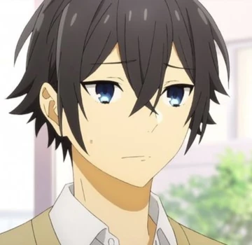

Sou um desenvolvedor front-end júnior, apaixonado por criar
interfaces intuitivas e funcionais para os usuários. Tenho sólidos
conhecimentos em **HTML** e **CSS**, o que me permite construir
páginas bem estruturadas e estilizadas, sempre atento aos detalhes e
à experiência visual. Com o uso do **Bootstrap**, consigo
desenvolver layouts responsivos de forma ágil, garantindo que os
projetos se adaptem perfeitamente a diferentes dispositivos e
tamanhos de tela.
Atualmente, estou aprimorando minhas habilidades em **JavaScript**,
trazendo mais interatividade e dinamismo para os meus projetos.
Gosto de implementar funcionalidades que tornam os sites mais
atrativos e fáceis de usar. Além disso, sou familiarizado com
**Git** e **GitHub**, o que me ajuda a manter a organização e a
colaborar em equipes, gerenciando versões de código e contribuindo
de forma eficiente para projetos.
Tenho uma paixão por tecnologia e busco constantemente aprender e
crescer como desenvolvedor. Meu objetivo é continuar evoluindo no
desenvolvimento front-end enquanto dou os primeiros passos rumo ao
desenvolvimento full-stack, ampliando minhas possibilidades e
criando projetos que unam design e funcionalidade de maneira
excepcional.
Sobre mim:
Projetos

Contatos:
Envie-me uma mensagem através desse formulário.